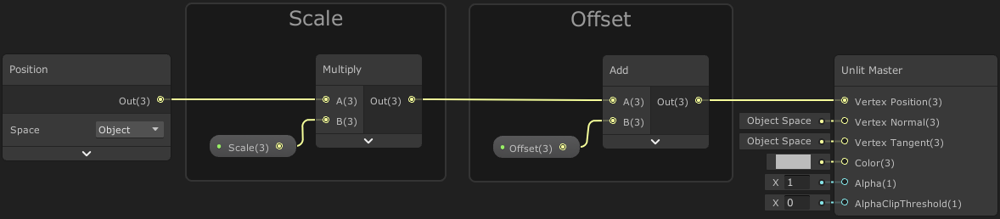
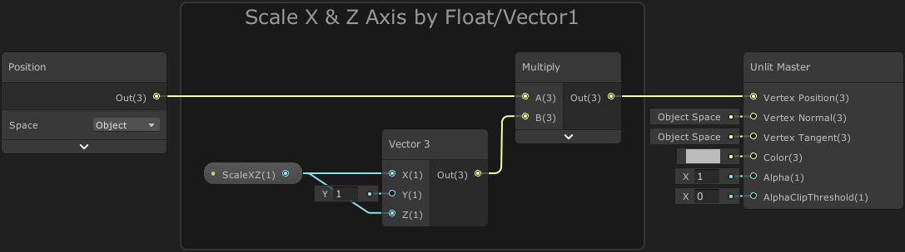
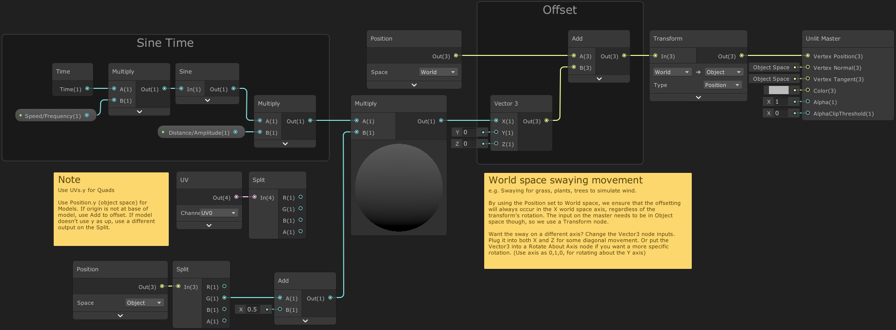
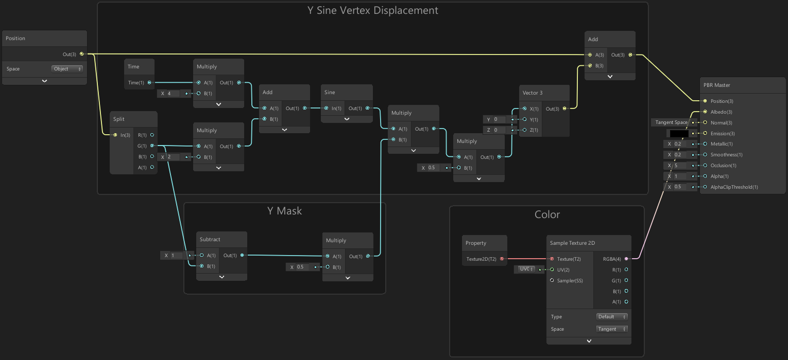
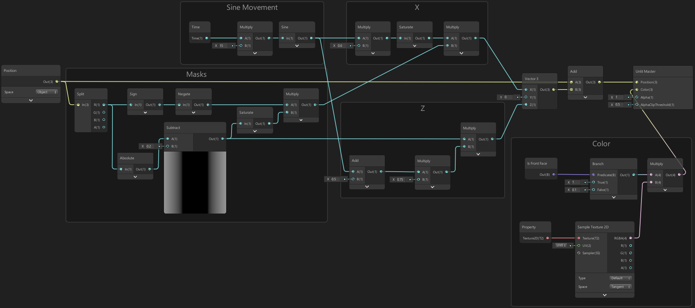

Vertex Displacement
Shader Stages
While fragment shaders provide colours for each fragment/pixel, we can use vertex shaders to offset the vertices of the mesh. In Shader Graph, nodes that are connected to the Master node’s Vertex ports are written to this vertex shader stage.
When attempting to connect a node between the vertex and fragment stages, they sometimes may not connect. It is usually a good idea to keep the two parts as separate as possible. Sometimes, disconnecting the Vertex ports in the Master node/stack temporarily can help.
Note that there are also certain nodes that won’t work in the Vertex stage, and will cause the graph not to connect. This is most common whe using the Sample Texture 2D node. If you need to sample a texture in the vertex stage you must use the Sample Texture 2D LOD node instead! (This is due to the LOD/mip map level being calculated automatically in the first one, by using partial screen space derivatives, a.k.a the DDX, DDY, DDXY nodes which will only work in the fragment shader)
I believe the Is Front Face node is another that will only work in the fragment stage - which makes sense, as a face is made up of multiple vertices so wouldn’t be available in a per-vertex situation.
Vertex Displacement
The process of offsetting vertices is usually referred to as Vertex Displacement. The Vertex Position port on the Master node/stack requires the position to be defined in Object space as it will handle conversions to other spaces automatically.
To offset the vertices we create a Position node set to Object space. This returns a Vector3 of our vertex position that we can then manipulate. For offsetting, we can use Add or Subtract nodes, but we can also scale the position, which pulls or pushes it from the origin (0,0,0), by using Multiply or Divide nodes.
Scaling should usually be done first, assuming you want to keep the offset in terms of object space units rather than the scaled space. We can scale/offset each vertex by connecting a Vector3 node and set each component separately, or use a Vector3 property to control it from the inspector, or a C# Script (via materialReference.SetVector(“_Ref”, vector), where _Ref is the reference string of the property in the shadergraph blackboard).
You can also Split and offset/scale each component separately then recombine in a Combine or Vector3 node, however this very quickly causes the graph to get messy with overlapping wires. I suggest using the Vector3 node/property approach instead.
Here is another example if you wanted to scale both the X and Z with the same Vector1 property. Since we use a Multiply to adjust scale, we set the Y value to 1 so there is no change. (With offsetting we would use a value of 0 for no change)
We can also use a Time node to animate the offset over Time (or Sine Time, etc). There will be more examples later in the post including a swaying effect for grass/plants and animating fish or butterflies.
Bounds
Shaders run on the GPU, so it’s important to understand that it will not actually update the CPU-side mesh vertices, mesh bounds or affect colliders. If the camera goes outside the original bounds, the mesh renderer will be culled, which can sometimes be a problem if our displaced vertices are outisde of these bounds. We either need to keep scaling/offsetting small, or override the bounds on the mesh. e.g.
|
|
Note that this creates a new mesh instance, see MeshFilter.mesh. You are responsible for cleanup, so be sure to Destroy(mesh) in the MonoBehaviour.OnDestroy function! You’d usually use .sharedMesh instead if you don’t want to create a mesh instance. However then all objects that use that mesh will share those bounds, (and I’m unsure if you can even edit the bounds of a mesh from an imported model?)
As a tip for knowing what origin/size to use, add a Box Collider to the object, resize it, and use the center/size values, or just GetComponent<BoxCollider>().bounds.
If you’re interested in updating colliders, maybe consider moving the vertex displacement to the CPU. See the Mesh class, mesh.vertices or mesh.GetVertices / SetVertices.
Uses
Some uses of vertex displacement:
- Adding detail to a mesh using displacement textures along with tessellation (which can’t be done in shadergraph yet as far as I know, at least not in URP).
- Animating vertices on a water plane to simulate waves. (See this catlikecoding tutorial for a good example)
- Creating various effects such as melting and wobbling. (I’ve done a melting candle effect before, shared on twitter here)
- Simulating wind on grass, plants and trees, see example below.
- Adding simple animation to regular meshes, instead of using skinned meshes. See below for examples of the motion of swimming fish and flapping butterfly/bird wings, which are fairly simple to simulate. The game ABZÛ also uses this a lot, see this ABZÛ GDC Talk.
- It’s also possible to bake actual skinned mesh animations to textures, and use the Vertex ID (SV_VertexID) to read the texture. While I haven’t used it, I am aware of this Mecanim2Texture tool by ryanslikesocool. I believe it also allows for baking Vertex IDs into a UV channel (as shader graph can’t use SV_VertexID yet), and some custom nodes for playback of the animations.
Examples
Swaying Grass
Right Note : By using the Position set to World space, we ensure that the offsetting will always occur in the X world space axis, regardless of the transform’s rotation. The input on the master needs to be in Object space though, so we use a Transform node.
Want the sway on a different axis? Change the Vector3 node inputs. Plug it into both X and Z for some diagonal movement. Or put the Vector3 into a Rotate About Axis node if you want a more specific rotation. (Use axis as 0,1,0, for rotating about the Y axis)
Left Note : Use UVs.y for Quads. Use Position.y (object space) for Models. If origin is not at base of model, use Add to offset. If model doesn’t use y as up, use a different output on the Split.
Swimming Motion (Fish)
A simple way to create a swimming motion for a fish, is to offset the R/X Position of the fish (left/right) by a Sine wave based on Time added with the position along the fish (forward/back, which is actually G/Y for the model I’m using). This can then be multiplied with a mask created from the G/Y position so vertices at the front of the fish move less.
In terms of code, this would be something along the lines of :
|
|
Note that values may vary based on the scale of the fish mesh. This was based on a model with 2 units length, with the origin being in the center.
Wings Motion (Butterfly, or Bird)
For the motion of wings for a butterfly (see tweet in fish example above), we first create a mask based on the R/X (left/right) axis of the Position to determine how we offset the wings, which uses an Absolute so that we offset both wings in the same B/Z direction (which is up/down for this model).
We can then offset the B/Z position by a Sine wave based just on Time which will make the wings move linearly. If we want the wings to bend (which would be better for a bird) we can Add the mask to the Time output and put this into the Sine node instead.
We can also offset the R/X (left/right) a little, so as the wings go upwards they also move slightly inwards, which will reduce stretching and make the motion feel more realistic.
In terms of code, this would be something along the lines of :
|
|
Note that values may vary based on the scale of the butterfly mesh. This was based on a model of 2 by 2 units, with the origin being in the center.
Thanks for reading! If you have any comments, questions or suggestions you can drop me a tweet or join my discord. If this post helped, consider sharing a link with others!
~ Cyan